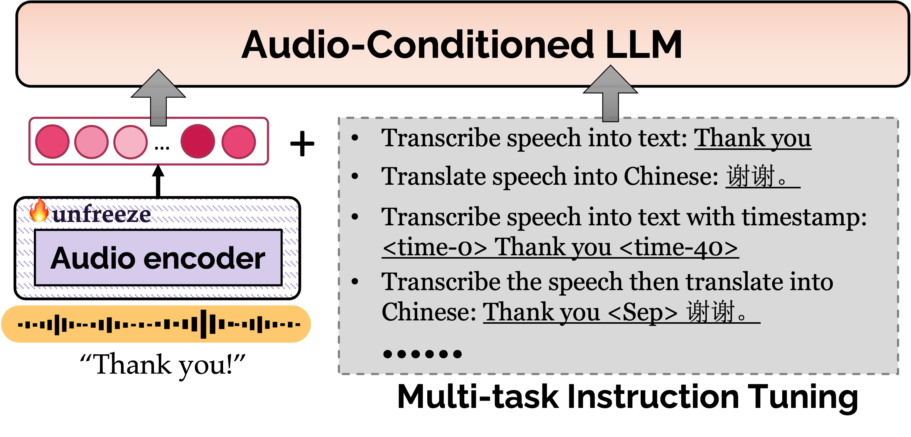

Speech Translation with Large Language Models: An Industrial Practice
[Paper]
Zhichao Huang*, Rong Ye*, Tom Ko, Qianqian Dong, Shanbo Cheng, Mingxuan Wang, Hang Li
ByteDance
{zhichao.huang, yerong}@bytedance.com
Abstract. Given the great success of large language models (LLMs) across various tasks, in this paper, we introduce LLM-ST, a cutting-edge speech translation model constructed upon a pre-trained LLM. By integrating the large language model with a speech encoder and employing multi-task instruction tuning, LLM-ST can produce accurate timestamped transcriptions and translations, even from long audio inputs. Furthermore, our findings indicate that the implementation of Chain-of-Thought (CoT) prompting can yield advantages in the context of LLM-ST. Through rigorous experimentation on English and Chinese datasets, we showcase the exceptional performance of LLM-ST, establishing a new benchmark in the field of speech translation.
This page is for research demonstration purposes only.
Contents
Model Overview

Figure. Overview of LLM-ST. The framework consists of two LM-based components: an Audio Encoder and an Audio-Conditioned LLM.
Examples of Speech-to-text Recognition and Translation
English-to-Chinese Translation
Chinese to English Translation
Examples of Speech Translations
Prosody helps the translation
| English Speech | ASR | Cascaded System | LLM-ST |
|---|---|---|---|
Help! Help! ahhhhh! |
帮助帮助。 啊。 |
救命！救命！ |
|
One finger or two fingers? |
一个手指或两个手指。 |
一根手指还是两根手指？ |
|
You guys like dumplings? |
你们喜欢饺子。 |
你们喜欢饺子吗？ |
|
To Vanessa, Natalia, Bianca, Capri, my wife and I will keep you close in our hearts and our prayers. |
致凡妮莎·娜塔莉亚·比安卡·卡普里。 我和我的妻子会在我们的心中，在我们的祈祷中把你放在身边。 |
致瓦妮莎，娜塔莉亚，比安卡，卡普里，我的妻子和我，我们将在心中和祈祷中与你们同在。 |
Context helps to resolve ambiguity
| English Speech | ASR | Cascaded System | LLM-ST |
|---|---|---|---|
We're actually foundation, um, owned, so we have less of the quarterly pressure. |
我们实际上建立了自己的基础。 所以我们的季度压力较小。 |
我们实际上是基金会所有，所以我们的季度压力更小。 |
|
Stocks are not as complicated as those Wall Street firms make you believe. |
文档并不像那些华尔街公司让你相信的那么复杂。 |
股票并不像那些华尔街公司让你相信的那样复杂。 |
|
When it's tough, will you give up, or will you be relentless? |
艰难的时候，你会放弃还是会毫不留情？ |
困难的时候，你会放弃，还是会坚持不懈？ |
|
Will you be a cynic, or will you be a builder? |
你会成为一个愤世嫉俗的人 还是一个建筑工人？ |
你会成为一个愤世嫉俗者，还是会成为一个建设者？ |
|
All right, we're back in Damascus right now, after a two hour drive from Homs. |
在大马士革，从皇家海军驱车两小时后。 |
现在在大马士革，从霍姆斯出发开了两个小时的车。 |
|
Yeah, I looked up before that, as long as you get the official taxi stand, then it should be about 100 RMB to the center of Beijing. |
是的，在那之前我抬头看了看。 只要你有官方的出租车站，那么到北京市中心应该大约需要100元人民币。 |
是的，我之前查过，只要你到官方的出租车停靠站， 到北京市中心大约需要100元人民币。 |
Better Translations for code-switch speech
| English Speech | ASR | Cascaded System | LLM-ST |
|---|---|---|---|
But in Taiwan, where I learned about Sanbeiji, Thai basil is always part of the dish. |
但是在台湾，我了解了桑拜吉，泰国罗勒总是这道菜的一部分。 |
但在台湾，我了解到三杯鸡， 泰国罗勒总是这道菜的一部分。 |
|
I tried that. Didn't work at all for me, so stick with Thai basil and enjoy your delicious Sanbeiji. |
我试过了。那对我一点用都没有。 所以坚持用泰式罗勒，享受你美味的桑白吉。 |
我试过那个，但对我完全没用，所以坚持用泰国罗勒，享受你美味的三杯鸡。 |
|
Fu Qi Fei Pian literally means slices of husband and wife's lungs. Eh. |
Uchife pan字面意思是丈夫和妻子的肺部切片。 |
夫妻肺片，字面意思是丈夫和妻子的肺片。是的。 |
|
It got this name because when the dish first originated, it used "Fei" or unwanted meats from cows, like cow tongues and lungs, and the dish was made best by a husband and wife duo. |
它之所以有这个名字，是因为当这道菜最初起源时，一个用过的Fey吃了奶牛不想要的肉，比如凯尔顿和肺，这道菜是由一对夫妻做的最好的。 |
它之所以有这个名字，是因为当这道菜刚出现的时候，它使用了“废”的牛肉，比如牛舌和牛肺，这道菜是由一对夫妻共同制作的。 |
Better Translations for name entities
| English Speech | ASR | Cascaded System | LLM-ST |
|---|---|---|---|
And these are some of the basic concepts for the Metaverse. |
这些是Metaverse的一些基本概念。 |
这些是元宇宙的一些基本概念。 |
|
The pop star and brains behind Fenty Beauty is worth an estimated 1.7 billion dollars on the 2022 list. |
芬蒂美容背后的流行歌星和大脑在2022年的榜单上估计价值17亿美元。 |
这位流行歌星和 Fenty Beauty 背后的智囊团在 2022 年的榜单上的身价估计为 17 亿美元。 |
|
After bursting onto the fashion scene with the brand collective Vetements, Demna took the helm of Balenciaga in 2015 as part of a radical modernization, including the Triple S, which set a fire the ugly sneaker trend, and helped Balenciaga surpass a billion dollars in revenue in 2019, spawning a thousand copycats. |
在凭借品牌闯入时尚界后 集体兽医购物中心，Demna于2015年掌舵巴黎世家，作为激进现代化的一部分， 包括Triple s， 它点燃了丑陋的运动鞋潮流，并帮助巴黎世家在2019年的收入超过10亿美元，催生了1000名模仿者。 |
在以品牌集合 Vetements 闯入时尚界后，德姆纳于 2015 年执掌巴黎世家， 作为激进现代化的一部分， 包括 Triple S， 它点燃了丑陋运动鞋的潮流， 并帮助巴黎世家在 2019 年的收入超过了 10 亿美元， 催生出 1000 个模仿者。 |